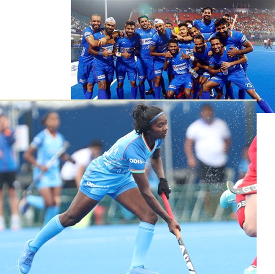
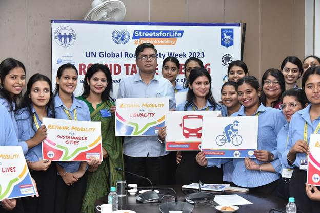

News
Website name: Jaipur News
News
Website name: Jaipur News
News
Website name: Jaipur News
LOGO : to be use at all pages at left
side
5 pages to be developed of titles as
follows:
Page 1 : Home page
Please design this home page like this
And add following stories shorts at home
with link of full story
Page 2: National
Page 3: Entertainment
Page 4: Sports
Page 5 : Opinion
Page 2 : National
News 1 : Indian Politics
Title: Countdown to Democracy: Anticipation Builds for Upcoming Elections
As the nation stands on the brink of another crucial democratic exercise,
all eyes are on the upcoming elections that promise to shape the trajectory
of Indian politics. With anticipation running high, political parties,
citizens, and analysts are gearing up for a pivotal moment in the country's
democratic journey.
1. The Battle of Ideologies
The political landscape is buzzing with a diverse array of ideologies, each
vying for the electorate's attention. Major parties have unveiled their
manifestos, outlining their vision for the nation's future. From economic
reforms to social welfare, these blueprints offer a glimpse into the
policies that could define the next chapter of governance.
2. Regional Dynamics and Alliances
Regional parties are asserting their influence, adding a dynamic layer to
the electoral landscape. The intricacies of regional politics are
manifesting in strategic alliances and coalition negotiations, potentially
impacting the distribution of power in key states. These alliances are
shaping up to be critical determinants in the overall electoral outcome.
3. Voter Engagement and Mobilization
Citizen participation remains a cornerstone of the democratic process.
Political parties and civil society are ramping up efforts to engage voters
through rallies, town hall meetings, and digital campaigns. The youth
demographic, in particular, is being courted aggressively, as their
collective voice could sway the election in unexpected ways.
4. Key Contenders and Emerging Leaders
Amidst the frenzy, charismatic leaders are emerging as central figures in
the electoral narrative. Incumbents are seeking to consolidate their
positions, while fresh faces are emerging as contenders, bringing new
perspectives and energizing their respective bases. These individuals could
play a pivotal role in shaping the political discourse in the months to
come.
5. Electoral Dynamics and National Issues
National issues are taking center stage as parties grapple with addressing
concerns such as economic recovery, healthcare, education, and security. The
electorate's evaluation of how parties respond to these challenges will
likely play a defining role in their voting decisions.
6. Pandemic Influence and Voter Safety
The ongoing pandemic continues to influence electoral proceedings,
necessitating innovative approaches to ensure voter safety. Hybrid campaign
strategies, virtual rallies, and stringent health protocols at polling
stations are among the adaptations being employed to safeguard the
democratic process.
7. Public Opinion and Exit Polls
As polling day draws closer, speculation abounds regarding the potential
electoral outcome. Exit polls and public opinion surveys are generating
projections and insights, offering a glimpse into the preferences of the
electorate. However, history reminds us that surprises are not uncommon in
the world of Indian politics.
In Conclusion
As the countdown to the upcoming elections ticks away, India stands at a
crossroads. The choices made by voters will shape the direction of the
nation for years to come. From ideologies and alliances to emerging leaders
and pandemic adaptations, these elections encapsulate the essence of
democracy - a shared journey of shaping the nation's destiny.
Reporting from Jaipur, I'm Prerana Arora for Jaipur News
Use
these pics:
indian political election images - Bing images
https://th.bing.com/th/id/OIP.0V9csWXX8F0ZOf_SkrBhFQHaH0?pid=ImgDet&rs=1

News 2:
Legal News
Title: Historic Shift: India's Legal Landscape Embraces Progress for LGBT
Rights
In a landmark decision that ushers in a new era of inclusivity, India's
legal system has taken a significant step forward in recognizing and
safeguarding the rights of the LGBTQ+ community. This transformative
development reflects a changing societal mindset and a concerted effort
towards a more inclusive and equal nation.
1. The Historical Verdict
The legal journey towards equality reached a significant milestone as the
Supreme Court of India struck down a colonial-era law that criminalized
consensual same-sex relationships. This historic verdict decriminalized
Section 377 of the Indian Penal Code, a move that was celebrated by human
rights advocates, activists, and the LGBTQ+ community.
2. Reaffirming Human Rights
The decision to overturn Section 377 is being hailed as a triumph for human
rights and personal freedom. The verdict recognizes the right to love and
the autonomy of individuals over their private lives, marking a departure
from a past marked by discrimination and societal stigma.
3. Impact on Society
This legal transformation is expected to have far-reaching implications on
society. It sends a strong message that all individuals, regardless of their
sexual orientation or gender identity, deserve equal protection under the
law. This shift is likely to foster acceptance, reduce discrimination, and
provide a safer environment for the LGBTQ+ community to live authentically.
4. A Progressive Society
The verdict is emblematic of India's journey towards becoming a more
progressive and inclusive society. It demonstrates a willingness to
challenge outdated norms and embrace diversity. As the nation celebrates
this milestone, there is optimism that it will inspire similar conversations
and actions around the world.
5. Addressing Ongoing Challenges
While the decriminalization of same-sex relationships is a monumental
achievement, challenges remain. Issues such as workplace discrimination,
healthcare access, and familial acceptance continue to affect the LGBTQ+
community. Advocates stress the need for comprehensive legal protections and
social reforms to ensure full equality.
6. The Road Ahead
The legal victory is a testament to the tireless efforts of activists and
allies who have campaigned for years to secure equal rights for the LGBTQ+
community. The decision paves the way for further advocacy, education, and
policy changes that will contribute to a more inclusive and just society.
7. Global Significance
India's shift towards recognizing the rights of the LGBTQ+ community carries
global significance. It adds momentum to the global movement for LGBTQ+
rights and sets an example for other nations to follow. The verdict
underscores the importance of upholding fundamental human rights
irrespective of one's sexual orientation or gender identity.
In Conclusion
The striking down of Section 377 marks a turning point in India's legal
landscape and society's perception of LGBTQ+ rights. This landmark decision
signifies a collective step towards a more inclusive, accepting, and
equitable nation. As the nation embraces this historic change, the hope is
that it will inspire a ripple effect of progress and empathy, both within
its borders and beyond.
Reporting from Jaipur, I'm Prerana Arora for Jaipur News
LGBTQ
Community India - Bing images
Page 3: Entertainment
Title: "Kashmir Files" Unveils Untold Narratives: A Controversial
Exploration of History
The much-anticipated film "Kashmir Files" has captivated audiences and
sparked intense debates with its bold exploration of historical events and
narratives surrounding the tumultuous region of Kashmir. Directed by
[Director's Name], the film delves into complex socio-political issues,
shedding light on perspectives that have long remained shrouded in
controversy.
1. Provocative Storytelling
"Kashmir Files" weaves a narrative that delves into the intricate tapestry
of Kashmir's history, shedding light on a series of events and decisions
that have shaped the region's trajectory. The film's storytelling approach
is unapologetically thought-provoking, presenting an alternative perspective
that challenges established narratives.
2. Unearthing Unspoken Realities
The film's portrayal of real-life incidents and individuals aims to
highlight lesser-known aspects of the Kashmir conflict. By unearthing
unspoken realities and revisiting historical moments, "Kashmir Files" seeks
to initiate critical conversations and encourage viewers to question
preconceived notions.
3. Controversy and Criticism
"Kashmir Files" has not been without its share of controversy and criticism.
The film's portrayal of certain events has sparked debates about historical
accuracy, authenticity, and the responsibility of filmmakers to present a
balanced view of complex issues.
4. Societal Discourse
The release of "Kashmir Files" has ignited a broader societal discourse,
prompting discussions on freedom of expression, the role of cinema in
shaping public perception, and the importance of engaging with diverse
perspectives to foster a more comprehensive understanding of history.
5. Audience Reception
Audience reactions to "Kashmir Files" have been mixed, with some praising
the film's audacity to address contentious topics and challenge prevailing
narratives. Others have expressed concerns about the potential impact of
such narratives on social cohesion and national unity.
6. Historical Reckoning
While "Kashmir Files" presents a particular viewpoint, its release has
prompted calls for a broader historical reckoning and a more comprehensive
understanding of the complex dynamics that have shaped the Kashmir conflict.
7. Film as a Catalyst
"Kashmir Files" serves as a testament to the power of cinema to provoke
thought, inspire debate, and encourage a deeper exploration of historical
events. It underscores the role of art in fostering critical thinking and
contributing to the ongoing dialogue about the past, present, and future of
Kashmir.
In Conclusion
"Kashmir Files" emerges as a significant cinematic endeavor that pushes the
boundaries of storytelling and engages viewers in conversations that are
often uncomfortable but undeniably essential. As discussions surrounding the
film continue to unfold, it reinforces the notion that cinema has the
potential to be a catalyst for introspection, reexamination, and a more
nuanced understanding of complex historical narratives.
Reporting from Jaipur, I'm Prerana Arora for Jaipur News

Page 4 : Sports
Title: Glorious Triumph: Indian Hockey Team Clinches Victory on the Global
Stage
In a moment that has ignited national pride and exuberance, the Indian
hockey team has emerged victorious on the international arena, clinching a
resounding win that marks a historic chapter in the nation's sporting
legacy.
1. The Journey to Glory
Months of dedication, rigorous training, and unwavering determination
culminated in an extraordinary feat as the Indian hockey team showcased
exceptional prowess and teamwork to secure a memorable victory. This
achievement is not only a testament to the players' skills but also a
reflection of the collective effort invested in the sport's resurgence in
the country.
2. Thrilling Final Match
In a nail-biting final match that kept fans on the edge of their seats, the
Indian hockey team displayed unwavering resolve and unmatched skill. The
players' strategic maneuvers and precise execution allowed them to outplay
their formidable opponents, securing a well-deserved victory that will be
etched in the annals of sporting history.
3. Triumph of Teamwork and Grit
The triumph is a celebration of teamwork, resilience, and unwavering
dedication. The players' unwavering focus, both on and off the field, played
a pivotal role in achieving this milestone. Their commitment to mastering
their craft and representing the nation with pride has earned them the
adoration and respect of millions.
4. Rewriting Records
This victory has shattered records and broken barriers, underscoring the
Indian hockey team's emergence as a force to be reckoned with on the global
stage. Their exceptional performance has not only secured the prestigious
title but has also inspired a generation of aspiring athletes to dream big
and pursue excellence.
5. National Rejoicing
Across the nation, euphoria and jubilation have swept through communities,
uniting people in celebration of this monumental achievement. The streets
are adorned with the tricolor, and the air is filled with chants of victory
as citizens revel in the pride of witnessing their team's triumph.
6. Message of Inspiration
The Indian hockey team's victory resonates beyond the realm of sports,
serving as an inspiration for individuals across diverse fields. It
underscores the importance of dedication, discipline, and unyielding
determination in the pursuit of excellence. The players' journey serves as a
reminder that challenges can be overcome with hard work and belief.
7. Nurturing Sporting Talent
The victory highlights the significance of investing in sports
infrastructure, training facilities, and grassroots development. It serves
as a clarion call to nurture budding talent and provide aspiring athletes
with the resources and support needed to realize their potential.
In Conclusion
The Indian hockey team's triumph is a resounding statement of the nation's
sporting prowess and a source of immense pride for every citizen. This
historic win is a reminder that when skill, determination, and unity
converge, the possibilities are boundless. As the nation basks in the glory
of this remarkable achievement, the legacy of the Indian hockey team will
continue to inspire generations to come.
Reporting from Jaipur, I'm Prerana Arora for Jaipur News
indian hockey team - Bing images

indian hockey team - Bing images
Indian Hockey Team Olympics - Bing images

Page 5 : Opinion
News 1:
Title: United for Safer Roads: UN Decade of Action for Road Safety
In a world marked by rapid urbanization, burgeoning populations, and
ever-increasing mobility, road safety has emerged as a paramount concern.
The United Nations' Decade of Action for Road Safety, spanning from 2021 to
2030, aims to address the escalating global road safety crisis through
comprehensive initiatives, partnerships, and advocacy. This feature delves
into the significance of this decade-long campaign and the collaborative
efforts required to make our roads safer for everyone.
1. The Urgent Need for Action
The statistics are sobering: Every year, more than 1.35 million lives are
cut short due to road traffic accidents, with countless more suffering
life-altering injuries. Road accidents rank among the leading causes of
death and injury globally, particularly affecting low- and middle-income
countries where road safety measures may be inadequate.
2. A Vision for the Decade
The United Nations' Decade of Action for Road Safety is founded on a clear
vision: to stabilize and then reduce the forecasted level of road traffic
deaths and injuries around the world by 2030. This ambitious goal is
anchored in the belief that road safety is a shared responsibility,
requiring the collective commitment of governments, civil society, private
sector entities, and individuals.
3. Pillars of Action
The Decade of Action for Road Safety is underpinned by five pillars, each
addressing a crucial aspect of road safety:
a. Road Safety Management: Strengthening institutional capacity, setting
road safety targets, and developing comprehensive national road safety
strategies.
b. Safer Roads and Mobility: Designing safer road infrastructure, improving
public transportation systems, and enhancing pedestrian and cyclist safety.
c. Safer Vehicles: Promoting the adoption of vehicle safety standards,
encouraging the use of modern safety technologies, and raising awareness
about vehicle safety ratings.
d. Safer Road Users: Educating and raising awareness among road users about
safe behaviors, promoting the use of helmets, seat belts, and child
restraints, and combatting distracted and impaired driving.
e. Post-Crash Response: Enhancing emergency medical services, trauma care,
and rehabilitation for road crash victims to minimize the impact of
accidents.
4. Global Partnerships and Collaborative Efforts
The Decade of Action for Road Safety acknowledges that no single entity can
address the road safety crisis alone. A multitude of stakeholders, including
governments, international organizations, non-governmental organizations,
and the private sector, are coming together to champion road safety as a
shared priority.
5. Technology as a Game Changer
Advances in technology are poised to play a pivotal role in advancing road
safety during this decade. Innovations such as advanced driver assistance
systems, vehicle-to-vehicle communication, and the eventual realization of
autonomous vehicles have the potential to dramatically reduce the occurrence
of accidents caused by human error.
6. Empowering Communities and Individuals
The success of the Decade of Action for Road Safety hinges on the active
involvement of individuals and communities. Road safety awareness campaigns,
educational initiatives, and grassroots advocacy efforts are vital to foster
a culture of responsible road use and encourage safe behaviors.
7. Measuring Progress and Celebrating Success
As the decade progresses, monitoring and evaluating progress will be
crucial. Regular assessments of road safety measures, data analysis, and
impact assessments will ensure that efforts remain on track and that
successes are celebrated.
8. A Collective Legacy
The United Nations' Decade of Action for Road Safety is more than a
campaign; it is a call to action that transcends borders and cultures. It is
a testament to the global community's commitment to saving lives and
preventing injuries on our roads. By working together, sharing knowledge,
and implementing evidence-based interventions, we can transform the road
safety landscape and leave a lasting legacy of safer roads for generations
to come.
In Conclusion
As the world navigates the complex challenges of the 21st century, ensuring
road safety stands as a fundamental and non-negotiable priority. The United
Nations' Decade of Action for Road Safety serves as a beacon of hope,
inspiring governments, organizations, and individuals to unite, innovate,
and advocate for safer roads. With a shared commitment, unwavering
dedication, and a relentless pursuit of progress, we can collectively turn
the tide and make the vision of safer roads a reality for all.
Reporting from Jaipur, I'm Prerana Arora for Jaipur News

News 2:
Title: Empowering Women: Addressing Safety Concerns in Rajasthan
In a sobering reminder of the pressing need for enhanced measures to ensure
women's safety, recent crime incidents in Rajasthan have sparked
conversations about the challenges faced by women and the concerted efforts
required to create a secure environment. This report sheds light on notable
cases, initiatives, and community responses that aim to safeguard women in
the state.
1. Alleged Assault Sparks Outrage
A disturbing incident of alleged assault against a young woman in [City
Name] has ignited widespread outrage and calls for justice. The incident has
shed light on the vulnerability of women in public spaces and has reignited
discussions about the urgency of preventive measures and stringent law
enforcement to prevent such incidents.
2. Community Vigilance and Awareness
In response to the rising concerns over women's safety, local communities
have come together to establish neighborhood watch programs and self-defense
workshops. These initiatives emphasize the importance of community vigilance
and equipping women with essential skills to protect themselves and respond
effectively in threatening situations.
3. Police Outreach and Support
Law enforcement agencies in Rajasthan are taking proactive steps to address
women's safety concerns. Specialized women's help desks, dedicated
helplines, and police patrolling in vulnerable areas aim to create a secure
environment and provide immediate assistance to women in distress.
4. Legal Reforms and Accountability
Calls for stricter legal measures to deter crimes against women have gained
momentum. Advocates are urging for speedy trials, stringent punishments, and
increased accountability for perpetrators to send a strong message that such
actions will not be tolerated.
5. Public Transport Safety
Enhancing safety measures in public transport systems has become a priority.
Authorities are working to improve lighting, install surveillance cameras,
and provide increased police presence at transportation hubs to create a
safer environment for women commuters.
6. Empowerment and Education
Empowering women through education and awareness campaigns remains a pivotal
strategy. Schools and colleges are incorporating gender sensitization
programs, self-defense training, and discussions on women's rights to equip
young women with the knowledge and skills needed to navigate the world
confidently.
7. Collective Responsibility
The recent incidents have sparked a broader conversation about society's
collective responsibility to create a safe and respectful environment for
women. Businesses, educational institutions, and local organizations are
joining hands to promote gender equality, challenge harmful stereotypes, and
foster a culture of mutual respect.
In Conclusion
The focus on women's safety in Rajasthan highlights the need for
multi-faceted approaches that combine legal reforms, community engagement,
and educational initiatives. By fostering a society where women can move
freely and confidently, Rajasthan can pave the way for a brighter and safer
future for all. The collective efforts of individuals, communities, and
authorities are integral in creating a secure environment that empowers
women and upholds their right to live without fear.
Reporting from Jaipur, I'm Prerana Arora for Jaipur News


{kind=link}
{kind=link}
{kind=link}
{kind=link}
{kind=link}
{kind=link}
{kind=link}